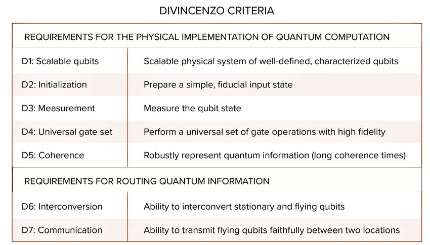
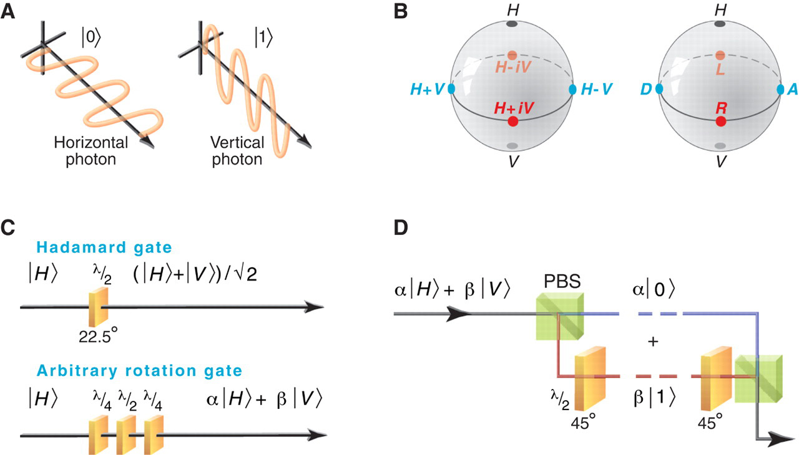
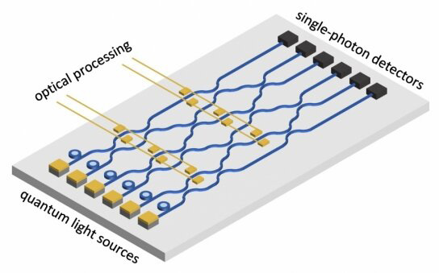
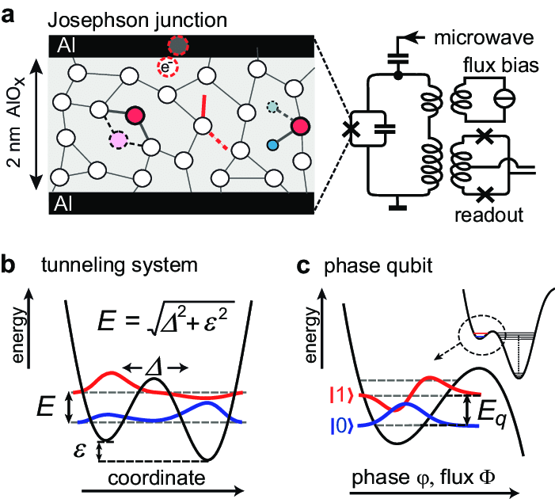
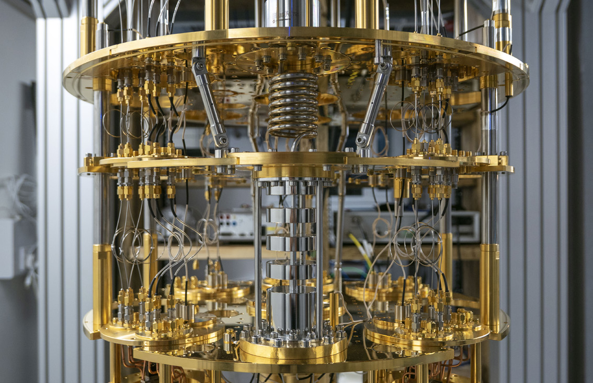
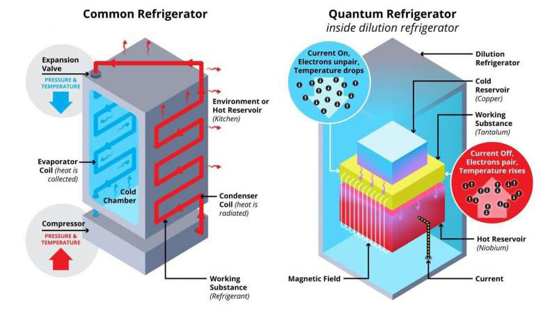
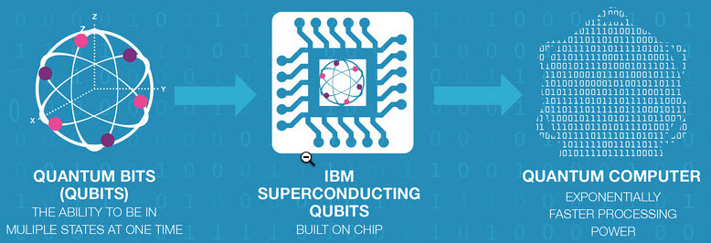
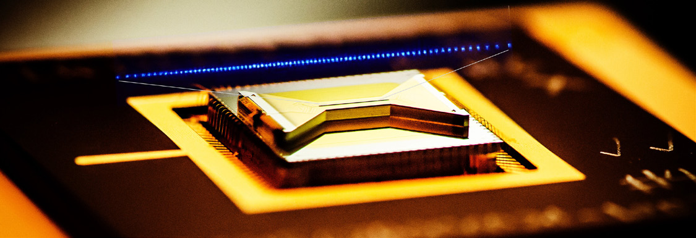
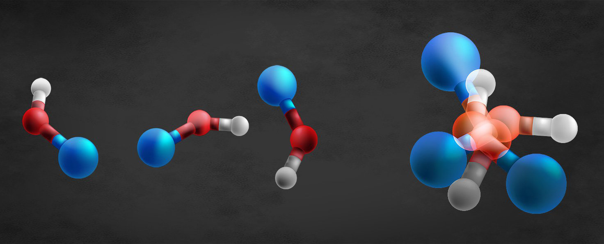

The qubit is an abstraction. Chapters 4 through 6 treated it as a two-level system that can be put into superposition, entangled, gated, and measured. Real machines have to build that two-level system out of physics, and physics does not hand it over cleanly. Every candidate technology is a negotiation between three things that fight each other: isolation from the environment (to keep coherence), strong controllable coupling (to run gates), and a path to scale (to reach useful qubit counts). No platform wins on all three. This chapter walks through the four physical approaches that matter most in 2026: photonic qubits, superconducting circuits, trapped ions, and the newer molecular approach. For each one we cover what the qubit is, why it is different, where the technology stands, and what holds it back.
Of the approaches in commercial and research use today, superconducting circuits and trapped ions are the most developed, with photonics close behind and scaling quickly. A wide front of research is underway across all of them, plus several platforms this chapter does not cover in depth (neutral atoms, semiconductor spin qubits, topological qubits, nitrogen-vacancy centers in diamond). For each platform that follows, three questions organize the discussion:
A useful way to keep score across platforms is the set of conditions a system must meet to run quantum algorithms at all. These are the DiVincenzo criteria, named for the physicist David DiVincenzo, who set them out in the late 1990s. There are five core requirements plus two more for quantum communication.

Every platform in this chapter is graded, implicitly, against this list. A photon is a superb flying qubit and a difficult stationary one. A superconducting circuit gives fast gates and easy fabrication but short coherence. A trapped ion gives near-perfect fidelity and long coherence but slow gates and a hard scaling road. A molecule offers rich internal structure that may make error correction cheaper, at the cost of being the least mature option on the bench. Hold the criteria in mind as a scorecard.
A photonic qubit encodes information in a single particle of light. The most common encoding uses polarization: a horizontally polarized photon is the logical 0, a vertically polarized photon is the logical 1, and any superposition of the two is a valid qubit state. Other encodings use the photon's path (which of two waveguides it occupies), its arrival time, or its frequency. Because a photon's polarization state maps directly onto a point on the Bloch sphere, the full single-qubit state space is available with standard optical components.

Photons make an attractive technology for several reasons. They interact only weakly with their environment and with each other, which gives them an inherent natural isolation. That isolation means long coherence and very low noise, and it is the same property that makes photons the carrier of choice for quantum communication: a photonic qubit can travel through optical fiber or free space and arrive with its state intact. Single-qubit operations are straightforward. Mirrors, beam splitters, phase shifters, and wave plates manipulate the state, and single-photon detectors read out the result. Historically this demanded complex instrumentation in carefully controlled environments. Today, integrated silicon photonics puts the sources, waveguides, interferometers, and detectors onto a chip, which raises scale-up potential and lowers noise at the same time.

The weak interaction that makes photons such good carriers is also their central problem. Two-qubit gates require qubits to interact, and photons by design barely do. Building a robust deterministic two-qubit gate between single photons is the defining challenge of the platform. The standard answer, linear optical quantum computing, sidesteps the difficulty: an effective strong interaction is synthesized by combining single-photon operations with measurement, producing a gate that succeeds only probabilistically. Make it work often enough, with enough redundancy and feed-forward, and probabilistic gates can be stitched into a deterministic computation. The cost is a great deal of extra hardware for heralding and error handling.
A second challenge is physical size. A photon has a wavelength near a micron, it travels at the speed of light, and it is routed along one dimension of an optical chip. Scaling up the photon count quickly runs into the real estate and routing limits of the chip. One promising route around the gate problem replaces single photons with continuous variables. Instead of entangling individual photons, entire light beams are entangled to form a continuous-variable cluster state. These states can be prepared optically at room temperature, are easier to produce at scale than single-photon states, and carry a substantial amount of information, which moves the platform closer to fault-tolerant operation. Several companies are pursuing room-temperature photonic machines on exactly this path.
A superconducting qubit is an electrical circuit, cooled until it loses all resistance and starts to behave quantum-mechanically. The key component is the Josephson junction: a thin layer of non-superconducting material (often a roughly 2-nanometer aluminum-oxide barrier) sandwiched between two superconductors. Pairs of superconducting electrons, called Cooper pairs, tunnel across this barrier, and the junction behaves as a non-linear inductor. That non-linearity is essential. It makes the circuit's energy levels unequally spaced, so that the lowest two levels can be addressed as a clean two-level system without accidentally driving transitions to higher states. Depending on the circuit design, the qubit can be of the charge, flux, phase, or transmon type, among other flavors.

Superconducting qubits are lithographically defined, the same fabrication style used to make classical chips, which is their biggest structural advantage: the platform can in principle ride the manufacturing learning curve of the semiconductor industry. When cooled to milli-Kelvin temperatures, the circuits show cleanly quantized energy levels. They are compatible with microwave control electronics, they operate at nanosecond time scales (so gates are fast), and their coherence times have improved steadily year over year. These properties make superconducting circuits well suited to both gate-model quantum computation and quantum annealing. This is currently the most widely used qubit technology in quantum computing research, under development by IBM, Google, and the annealing-focused company D-Wave, among many others.

The downside is error rates, which are higher than for trapped ions, and a set of engineering problems that get harder as the qubit count grows. Maintaining qubit quality while scaling up the number of qubits on a single integrated circuit is the core difficulty. Fabrication variation across the chip gets worse as more qubits are packed in, and each qubit drifts a little from its neighbors. A common mitigation is shadow evaporation, a junction-fabrication technique that, with careful yield monitoring, is expected to scale to thousands of qubits. Higher gate fidelity helps in a second way: it lets more operations run inside the coherence window, so improving fidelity and extending coherence are both worth pursuing.

Refrigeration, wiring, and packaging are challenges in their own right. Modern dilution refrigerators handle up to several thousand DC wires and coaxial cables and can support on the order of 1,000 qubits, which requires careful materials choices to limit thermal load along with miniaturized coaxial lines and connectors. Control bandwidth is limited to roughly 12 GHz, and managing out-of-band impedance to higher frequencies, to keep decoherence down, gets harder as the physical assembly grows. Large machines will need two-dimensional arrays of qubits with real connections from each qubit out to its package and through the cryostat, which in turn calls for three-dimensional integration: high-coherence qubit chips bonded to multilayer interconnect routing wafers.
There is a control-latency problem that bears directly on error correction. Per-qubit control signals are generated by rack-mounted lab equipment, and when the next operation depends on the result of a prior measurement, which is the normal case in error-correction routines, a full round trip is required: send the signal down, get a result back, infer the next signal, and trigger it. With today's equipment that loop takes hundreds of nanoseconds, which limits the machine's effective clock speed. Faster electronics would shorten the clock period, and a shorter clock period translates directly into lower error rates. Wafer real estate matters too. A 300-millimeter wafer dedicated to a single processor could in principle hold on the order of 250,000 qubits; shrinking the qubit unit cell while preserving coherence and controllability raises density toward that number, but doing so will require new packaging, since high-coherence qubits today need pristine microwave environments with feature spacings smaller than a quarter wavelength. Large, high-quality packages are a longer-term problem. Even so, superconducting qubits remain the most advanced technology in deployed quantum computers.

A trapped-ion qubit is a single charged atom, held in place by electromagnetic fields in an ultra-high-vacuum chamber and addressed with laser or microwave fields. The qubit states are two stable electronic energy levels of the ion. The first quantum logic gate ever demonstrated, in 1995, was built on trapped atomic ions, and the platform's enduring claim to fame is accuracy: it delivers the highest gate fidelities of any technology. Honeywell (whose effort became Quantinuum), IonQ, and others pursue this approach commercially.
A working trapped-ion system integrates several subsystems: vacuum, lasers and optics, radio-frequency and microwave sources, and the coherent electronic controllers that orchestrate them. The quantum data plane is the set of ions serving as qubits together with the trap that holds them in fixed locations. Holding each ion in place leaves it ready for manipulation by microwave signals or lasers, which drive the ion into the desired quantum states. The control and measurement planes add a precise laser or microwave source aimed at a specific ion to change its state, a separate source to laser-cool the ion before measurement, and a set of photon detectors that read out an ion's state by collecting the photons it scatters. Lasers do double duty: they drive single-qubit operations, and they couple an ion's internal qubit state to the shared motion of the ion chain to entangle qubits with one another.

Qubits are stored in stable electronic states of each ion, and quantum information is shuttled between qubits through the collective quantized motion of the ions sharing a trap. The strength of the approach follows from the qubits being atoms: every ion of a given species is fundamentally identical, with no fabrication variation, and the high fidelity of operations scales naturally. The corresponding requirement is isolation. Each setup must be shielded from environmental noise to keep errors low and to delay the decoherence that would collapse the quantum state and erase the information. Here trapped ions differ sharply from superconducting machines in how they reach the needed isolation. Superconducting quantum computers live inside dilution refrigerators that cool the qubits to near absolute zero. Trapped-ion setups instead use laser cooling inside ultra-high-vacuum chambers, with filtering and software techniques, including error-correction schemes, to suppress noise and further delay decoherence.
The trade-off against superconducting circuits is speed and scale. Trapped-ion gates are mediated by the slow collective motion of the ion chain, so they run orders of magnitude slower than superconducting gates. Scaling a single trap past a few dozen ions becomes unwieldy, because every ion shares the same motional bus and addressing each one cleanly gets harder as the chain grows. The leading answer is a modular architecture: many small traps connected by shuttling ions between zones or by photonic links between modules. That networking path is exactly where the last two DiVincenzo criteria, interconverting stationary and flying qubits and transmitting flying qubits faithfully, become the deciding factors.
The newest serious candidate is the molecular approach, which builds qubits out of whole molecules rather than single atoms or engineered circuits. A molecule can encode quantum information in the spin of its electrons or nuclei, and certain molecules show two features that matter a great deal: a clear route to scaling the number of qubits, and access to a universal set of quantum gates. The appeal is that a molecule has rich internal structure, many rotational and vibrational and spin states, and that structure can be put to work.

The most striking idea in the molecular approach is using the complexity of a molecule to fight errors rather than cause them. Physicists at Caltech have been demonstrating this. The usual intuition is that complexity is the enemy, because quantum information lives in fragile superpositions and almost anything in the environment can disturb it. The molecular insight inverts that. If a qubit is made from a molecule, certain errors become easier to detect and prevent, because the molecule's extra degrees of freedom give the system room to encode redundancy.
The mechanism rests on a clever reading of Heisenberg's uncertainty principle. The principle says you cannot simultaneously know, with high precision, both where a particle is and where it is going. Caltech researchers found a loophole: while the exact position and momentum of a particle cannot both be measured, very tiny shifts in position and momentum can be detected. A small shift signals that an error has occurred, and detecting it makes it possible to push the system back to the correct state. Applied to a rotating molecule held in superposition, a small change in the molecule's orientation or angular momentum can be sensed and corrected without measuring (and thereby destroying) the encoded qubit. This is the central idea of the Physical Review X work titled "Robust encoding of a qubit in a molecule." Eventually it may be possible to control individual molecules for use in quantum information systems.
The molecular approach is the least mature of the four. It shows real promise, including the prospect of intrinsic, hardware-level error resilience, but it also carries significant practical challenges in preparing, controlling, and reading out molecular states with the precision the other platforms have already achieved. Measured against the DiVincenzo criteria, molecular qubits have demonstrated the principles, a well-characterized two-level system, gate operations, error detection, more than they have demonstrated scale. It is an approach to watch rather than one to deploy.
There are many ways to build a quantum computer, and the four covered here are only the most prominent. Each shows great prospects and each still has practical challenges. The next chapter looks at where the field actually stands today, across all of these platforms, and at what the current machines can and cannot yet do.
Take it interactively. The quiz lives on its own page with hidden answers - write your attempt first (even four characters works), then reveal. Self-graded. About 10 minutes.
Or read the questions and answers inline below (preserved for print and offline use).
[1] D. P. DiVincenzo, "The physical implementation of quantum computation," Fortschritte der Physik, vol. 48, no. 9-11, pp. 771-783, 2000. Verify before publication.
[2] J. L. O'Brien, A. Furusawa, and J. Vuckovic, "Photonic quantum technologies," Nature Photonics, vol. 3, pp. 687-695, 2009. Verify before publication.
[3] E. Knill, R. Laflamme, and G. J. Milburn, "A scheme for efficient quantum computation with linear optics," Nature, vol. 409, pp. 46-52, 2001. Verify before publication.
[4] M. Kjaergaard et al., "Superconducting qubits: current state of play," Annual Review of Condensed Matter Physics, vol. 11, pp. 369-395, 2020. Verify before publication.
[5] C. D. Bruzewicz, J. Chiaverini, R. McConnell, and J. M. Sage, "Trapped-ion quantum computing: progress and challenges," Applied Physics Reviews, vol. 6, no. 2, 021314, 2019. Verify before publication.
[6] V. V. Albert, J. P. Covey, and J. Preskill, "Robust encoding of a qubit in a molecule," Physical Review X, vol. 10, 031050, 2020. Verify before publication.